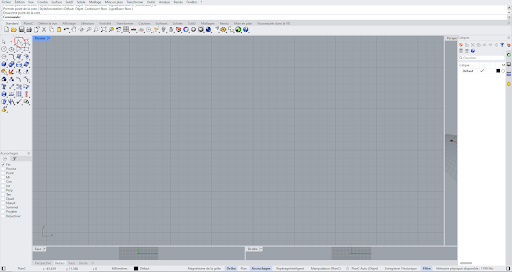
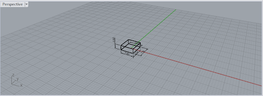
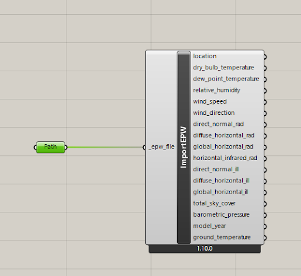
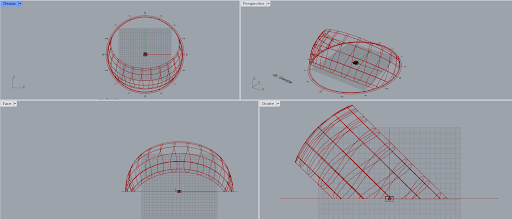
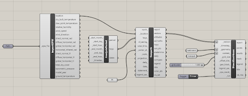
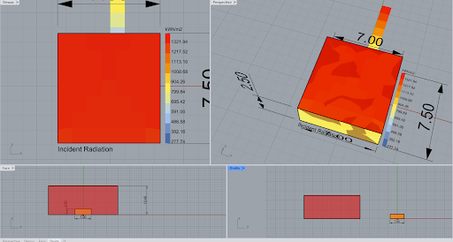

Rhino + Grasshopper + Ladybug
À quoi ça sert
Rhino est un modeleur 3D de référence en architecture. Grasshopper, son interface de programmation visuelle, permet de construire des scripts paramétriques sans coder. Ladybug et Honeybee sont des extensions Grasshopper dédiées à l'analyse environnementale des bâtiments : elles permettent de simuler la course du soleil, les heures d'ensoleillement direct, les masques solaires, le rayonnement sur les façades, et d'autres phénomènes physiques directement dans l'environnement 3D du projet.
C'est l'outil de référence pour les étudiants qui souhaitent pousser l'analyse environnementale dans un environnement paramétrique, en explorant rapidement des variantes géométriques et leurs impacts.
Quand l'utiliser dans cette toolbox
Phase APS et au-delà. Rhino demande de disposer d'un modèle 3D du bâtiment et de son contexte. Ce n'est pas un outil d'esquisse sans modèle préalable.
Rhino + Ladybug répond aux questions :
Prérequis
Avant de commencer, il faut avoir installé :
- Rhino (version 7 ou 8)
- Grasshopper (inclus dans Rhino)
- Ladybug Tools via le gestionnaire de packages Grasshopper
Prise en main
Rhino + Grasshopper + Ladybug demande un investissement réel. Compter une journée pour être opérationnel sur les analyses de base. La logique Grasshopper (nodes + connexions) est différente des logiciels traditionnels : on construit un graphe de composants plutôt qu'on utilise des menus. Une fois maîtrisée, cette logique est très puissante pour tester des variantes rapidement.
Étapes générales d'une analyse solaire
Étape 0 — Réglage de l'interface
Au premier lancement de Rhino, configurer les unités en mètres
(Outils → Options → Unités → Mètre), activer l'accrochage
« Fin », et activer le mode orthogonal (commande ModeOrtho).

Étape 1 — Dessiner le bâtiment
Utiliser la commande Polyline pour tracer l'emprise du bâtiment en 2D avec
les coordonnées précises (syntaxe rx,y). Vérifier les cotes avec l'outil
Cotation. Extruder ensuite le plan 2D en volume 3D avec l'outil Boîte, en précisant
la hauteur.

Étape 2 — Importer le fichier météo
Ouvrir Grasshopper (commande Grasshopper). Ajouter un composant
LB Import EPW et un composant File Path, puis connecter
le fichier EPW de la localisation voulue (disponible sur
climate.onebuilding.org
ou ladybug.tools/epwmap).

File Path → LB Import EPW dans Grasshopper.Étape 3 — Modéliser la course du soleil
Ajouter le composant LB Sunpath et le connecter au nœud location
de ImportEPW. Définir un point au centre du bâtiment (composant
Point → Set a Point sur Rhino) et le connecter au nœud
center_pt du Sunpath. Lancer la simulation (F5) : la voûte solaire
apparaît dans Rhino.

Étape 4 — Analyser les masques d'ombre
Modéliser les bâtiments voisins sur Rhino. Ajouter dans Grasshopper les composants
LB Direct Sun Hours, Number Slider,
Boolean Toggle, LB Analysis Period et un composant
Geometry pour chaque bâtiment. Connecter selon le schéma ci-dessous,
puis lancer la simulation.

Résultat — Heatmap d'ensoleillement
Le toit et les façades du bâtiment sont colorés selon le nombre d'heures d'ensoleillement direct reçues sur l'année. Les zones rouges/jaunes sont très ensoleillées ; les zones bleues sont masquées.

Forces et limites
Forces
- Analyse environnementale directement sur le modèle 3D du projet
- Paramétrique : un changement de géométrie met à jour l'analyse automatiquement
- Ladybug et Honeybee sont gratuits
- Très large communauté, nombreux tutoriels en ligne
- Résultats visuels très lisibles (heatmaps sur les façades)
- Compatible Mac depuis Rhino 8
Limites
- Rhino est payant (licence étudiante ~195 €)
- Courbe d'apprentissage réelle sur Grasshopper
- Pas adapté à la toute première esquisse sans modèle 3D
- Pour une conformité RE2020 réglementaire, il faut passer sur Pléiades ou OpenStudio
- Ladybug calcule des heures d'ensoleillement, pas des besoins thermiques dynamiques
Ressources
- Ladybug Tools (documentation officielle) →
- EPW map — trouver son fichier météo →
- climate.onebuilding.org — téléchargement des fichiers EPW →
- Communauté Grasshopper / McNeel →